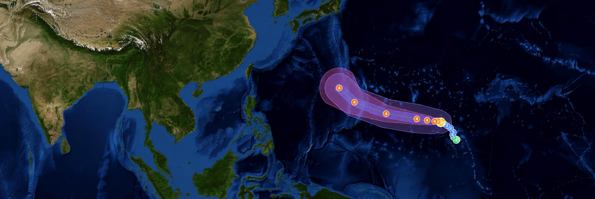

상황보고
29:54
어현상 (경위)
시스템 관리자 · ID/PW
상황보고
2026. 10. 26.(월) · 태풍 위치 · 예상 경로 · 해역 영향
대내 · 외 보안
기관 영상
클릭하면 원본 크기로 열린다
기관 실시간 영상 실시간
기관 이미지는 외부 서버에서 직접 받는다. 내부망에서 막히면 빈 칸이 되며, 태풍 이름을 눌러 열리는 「태풍 예측 비교」에서 원문 링크로 갈 수 있다.
태풍 위치
제31호 인파
강도3 · 33~43m/s
태풍 강도
1 강도1 17~24m/s
2 강도2 25~32m/s
3 강도3 33~43m/s
4 강도4 44~53m/s
5 강도5 54m/s↑
NASA/USGS · NOAA ETOPO
| 시각 | 위치 | 중심기압 | 최대풍속 | 70% 반경 |
|---|---|---|---|---|
| +12h | 14.3°N 162.2°E | 940 hPa | 47 m/s | 40 km |
| +24h | 14.3°N 161.4°E | 935 hPa | 49 m/s | 80 km |
| +36h | 14.5°N 159.8°E | 930 hPa | 50 m/s | 110 km |
| +48h | 14.8°N 157.6°E | 925 hPa | 51 m/s | 130 km |
| +72h | 15.8°N 151.0°E | 920 hPa | 53 m/s | 190 km |
| +96h | 18.1°N 144.2°E | 925 hPa | 51 m/s | 290 km |